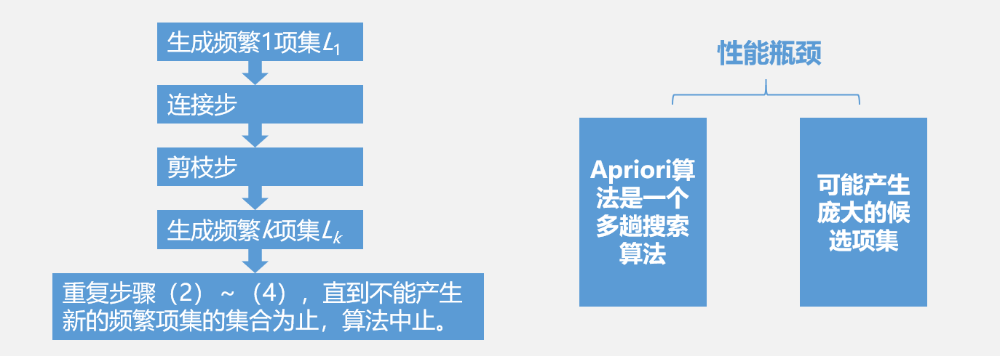
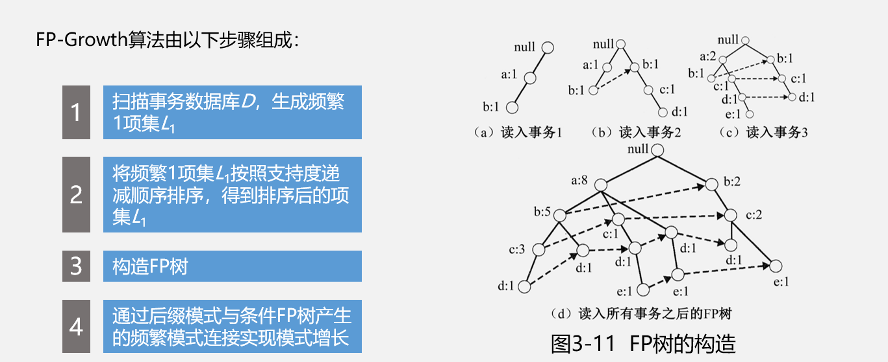
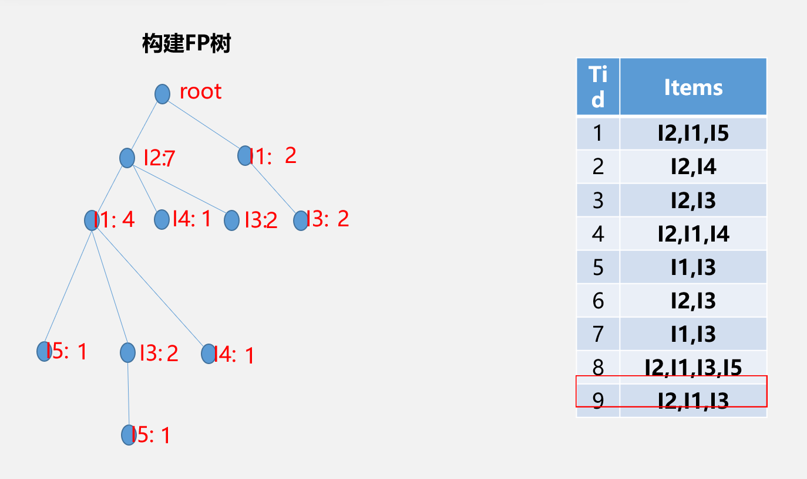

频繁项集的产生及经典算法
前言：
关联规则是数据挖掘中最活跃的研究方法之一， 是指搜索业务系统中的所有细节或事务，找出所有能把一 组事件或数据项与另一组事件或数据项联系起来的规则，以获 得存在于数据库中的不为人知的或不能确定的信息，它侧重于确 定数据中不同领域之间的联系，也是在无指导学习系统中挖掘本地模式的最普通形式。
一般来说，关联规则挖掘是指从一个大型的数据集（Dataset）发现有趣的关 联（Association）或相关关系（Correlation），即从数据集中识别出频繁 出现的属性值集（Sets of Attribute Values），也称为频繁项集 （Frequent Itemsets，频繁集），然后利用这些频繁项集创建描述关联关系的规则的过程。
关联规则挖掘问题:
发现频繁项集:现所有的频繁项集是形成关联规则的基础。通过用户给定的最 小支持度，寻找所有支持度大于或等于Minsupport的频繁项集。
生成关联规则:通过用户给定的最小可信度，在每个最大频繁项集中，寻找可信度不小于Minconfidence的关联规则.
如何迅速高效地发现所有频繁项集，是关联规则挖掘的核心问题，也是衡量关联规则挖掘算法效率的重要标准。
经典的挖掘完全频繁项集方法是查找频繁项集集合的全集。其中包括基于广度优先算法搜索的 关联规则算法--Apriori算法(通过多次迭代找出所有的频繁项集)及DHP(Direct Hashing Pruning) 算法等改进算法；基于深度优先搜索策略的FP-Growth算法，ECLAT算法，COFI算法等， 我将介绍两种经典算法--Apriori算法和FP-Growth算法。
1.Apriori算法
Apriori算法基于频繁项集性质的先验知识，使用由下至上逐层搜索的迭代方法， 即从频繁1项集开始，采用频繁k项集搜索频繁k+1项集，直到不能找到包含更多项的频繁项集为止。
Apriori算法由以下步骤组成，其中的核心步骤是连接步和剪枝步：

Apriori算法由以下步骤组成，其中的核心步骤是连接步和剪枝步：
（1）生成频繁1项集L1。
（2）连接步：为了寻找频繁k项集 ，首先生成一个潜在频繁k项集构成的候选项集 ， 中的每一个项集是由两个只有一项不同的属于 的频繁项集做k-2连接运算得到的。连接方法为：设l1和l2是 中的项集，即 ，如果l1和l2中的前k-2个元素相同，则称l1和l2是可连接的，用 表示。假定事务数据库中的项均按照字典顺序排列，li[j]表示li中的第j项，则连接l1和l2的结果项集是 。
（3）剪枝步：连接步生成的Ck是Lk的超集，包含所有的频繁项集Lk，同时也可能包含一些非频繁项集。可以利用前述先验知识（定理3.2），进行剪枝以压缩数据规模。比如，如果候选k项集Ck的k-1项子集不在Lk-1中，那么该子集不可能是频繁项集，可以直接删除。
（4）生成频繁k项集Lk：扫描事务数据库D，计算Ck中每个项集的支持度，去除不满足最小支持度的项集，得到频繁k项集Lk。
（5）重复步骤（2）～（4），直到不能产生新的频繁项集的集合为止，算法中止。
Apriori算法是一种基于水平数据分布的、宽度优先的算法，由于 使用了层次搜索策略和剪枝技术，使得Apriori算法在挖掘频繁模式时具 有较高的效率。但是，Apriori算法也有两个致命的性能瓶颈：
（1）Apriori算法是一个多趟搜索算法，每次搜索都要扫描事务数据库，I/O开销巨大。对于候选k项集Ck来说，必须扫描其中的每个元素以确认是否加入频繁k项集Lk，若候选k项集Ck中包含n项，则至少需要扫描事务数据库n次。
（2）可能产生庞大的候选项集。由于针对频繁项集Lk-1的k-2连接运算，由Lk-1 产生的候选k项集Ck是呈指数增长的，如此海量的候选集对于计算机的运算时间和 存储空间都是巨大的挑战。
Apriori算法步骤：
(1）扫描数据库，产生1-项集候选项集合C1；
(2)从2项集开始，利用上次产生的大项集构造新的候选集，计算每个候选集的支持度，得到下一阶大项集；
（3）重复执行步骤2，直至某阶大项集为空。
Apriori算法步骤：
设最小支持度为2，即in_sup=2利用Apriori算法产生候选项集及频繁项集的过程。
| 交易 | 商品代码 |
|---|---|
| T100 | L1,L2,L3 |
| T200 | L2,L4 |
| T300 | L2,L3 |
| T400 | L1,L2,L4 |
| T500 | L1,L3 |
| T600 | L2,L3 |
| T700 | L1,L3 |
| T800 | L1,L2,L3,L5 |
| T900 | L1,L2,L3 |
K=1,min_sup=1
| C1 | |
|---|---|
| 项集 | 支持度计数 |
| {L1} | 6 |
| {L2} | 7 |
| {L3} | 6 |
| {L4} | 2 |
| {L5} | 2 |
| L1 | |
|---|---|
| 项集 | 支持度计数 |
| {L1} | 6 |
| {L2} | 7 |
| {L3} | 6 |
| {L4} | 2 |
| {L5} | 2 |
| C2 | |
|---|---|
| 项集 | 支持度计数 |
| {L1,L2} | 4 |
| {L1,L3} | 4 |
| {L1,L4} | 1 |
| {L1,L5} | 2 |
| {L2,L3} | 4 |
| {L2,L4} | 2 |
| {L2,L5} | 2 |
| {L3,L4} | 0 |
| {L3,L5} | 1 |
| {L4,L5} | 0 |
| L2 | |
|---|---|
| 项集 | 支持度计数 |
| {L1,L2} | 4 |
| {L1,L3} | 4 |
| {L1,L5} | 2 |
| {L2,L3} | 4 |
| {L2,L4} | 2 |
| {L2,L5} | 2 |
| C3：由L2计算3项集 | |
|---|---|
| {L1,L2}+{L1,L3} | {L1,L2,L3} |
| {L1,L2}+{L1,L5} | {L1,L2,L5} |
| {L1,L2}+{L2,L3} | {L1,L2,L3} |
| {L1,L2}+{L2,L4} | {L1,L2,L4} |
| {L1,L3}+{L1,L5} | {L1,L3,L5} |
| {L1,L3}+{L2,L3} | {L1,L2,L3} |
| {L1,L3}+{L2,L4} | {超过三项} |
| {L1,L3}+{L2,L5} | {超过三项} |
| {L1,L5}+{L2,L3} | {超过三项} |
| {L1,L5}+{L2,L4} | {超过三项} |
| {L1,L5}+{L2,L5} | {L1,L2,L5} |
| {L2,L3}+{L2,L4} | {L2,L3,L4} |
| {L2,L3}+{L2,L5} | {L2,L3,L5} |
| {L2,L4}+{L2,L5} | {L2,L4,L5} |
| L3 | |
|---|---|
| 项集 | 支持度计数 |
| {L1,L2,l3} | 3 |
| {L1,L2,l5} | 2 |
| C3：由L3计算4项集 | |
|---|---|
| {L1,L2,l3}+{L1,L2,l5} | {L1,L2,L3,l5} |
因为它的子集{I2， I3，I5}不是频繁的，此项集删除，C4=∅
Apriori算法优缺点：
优点:思路简单；递归计算；实现方便
缺点:频繁遍历数据库；生成候选集-----连接较多；占用空间大；运算量大。
2.FP-Growth算法
频繁模式树增长算法（Frequent Pattern Tree Growth）采用分而治之的 基本思想，将数据库中的频繁项集压缩到一棵频繁模式树中，同时保持项集 之间的关联关系。然后将这棵压缩后的频繁模式树分成一些条件子树，每个 条件子树对应一个频繁项，从而获得频繁项集，最后进行关联规则挖掘。

FP-Growth算法演示-------构造FP树
事务数据库的建立
| Tid | Items |
|---|---|
| 1 | L1,L2,L5 |
| 2 | L2,L4 |
| 3 | L2,L3 |
| 4 | L1,L2,L4 |
| 5 | L1,L3 |
| 6 | L2,L3 |
| 7 | L1,L3 |
| 8 | L1,L2,L3,L5 |
| 9 | L1,L2,L3 |
扫描事务数据库得到频繁项目集F
| 11 | 6 |
|---|---|
| 12 | 7 |
| 13 | 6 |
| 14 | 2 |
| 15 | 2 |
定义minsup=20%,即最小支持度为2,重新排列F
| 12 | 7 |
|---|---|
| 11 | 6 |
| 13 | 6 |
| 14 | 2 |
| 15 | 2 |
重新调整事务数据库
| Tid | Items |
|---|---|
| 1 | L2,L1,L5 |
| 2 | L2,L4 |
| 3 | L2,L3 |
| 4 | L2,L1,L4 |
| 5 | L1,L3 |
| 6 | L2,L3 |
| 7 | L1,L3 |
| 8 | L2,L1,L3,L5 |
| 9 | L2,L1,L3 |

在FP树中可以看到，从根节点到i5:1的路径有两条：
i2:7-->i1:4-->i5:1
i2:7-->i14-->i3:2-->i5:1
i2:7-->i1:4和i2:7-->i14-->i3:2因为最终到达的节点肯定是i5，所以将i5省略就是i5的条件模式基，记为{i2,i1:1}{i2,i1,i3:1}
条件模式基：{i2,i1:1}{i2,i1,i3:1}
因为i3:1x小于最小支持度2,所以讲i3:1省略不计,i5的条件FP树记为{i2:2,I1:2}
根据条件FP树，我们可以进行全排列组合，得到挖掘出来的频繁模式（这里要将商品本 身，如i5也算进去，每个商品挖掘出来的频繁模式必然包括这商品本身）
| 项 | 条件模式基 | 条件FP数 | 产生频繁模式 |
|---|---|---|---|
| I5 | {{I2 I1:1},{I2 I1 I3:1}} | {I2:2,I1:2} | {I2 I5:2},{I1 I5:2},{I2 I1 I5:2} |
| I4 | {{I2 I1:1},{I2:1}} | {I2:2} | {I2 I4:2} |
| I3 | {{I2 I1:2},{I2:2},{I1:2}} | {I2:4,I1:2,I1:2} | {I2 I3:4},{I1 I3:4},{I2 I1 I3:2} |
| I1 | {{I1:4}} | {I2:4} | {I2 I1:4} |